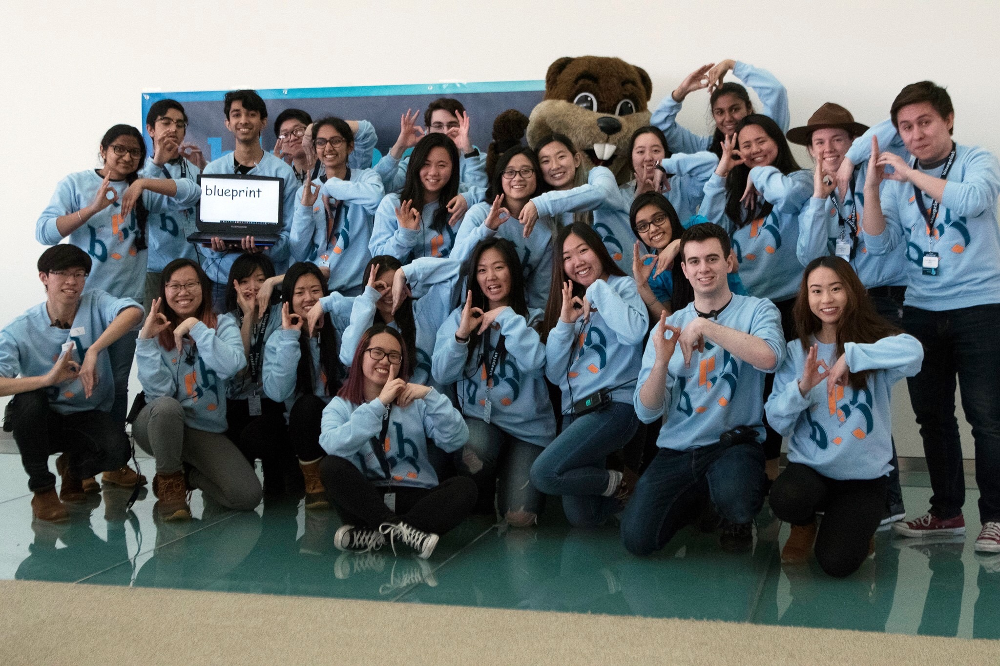
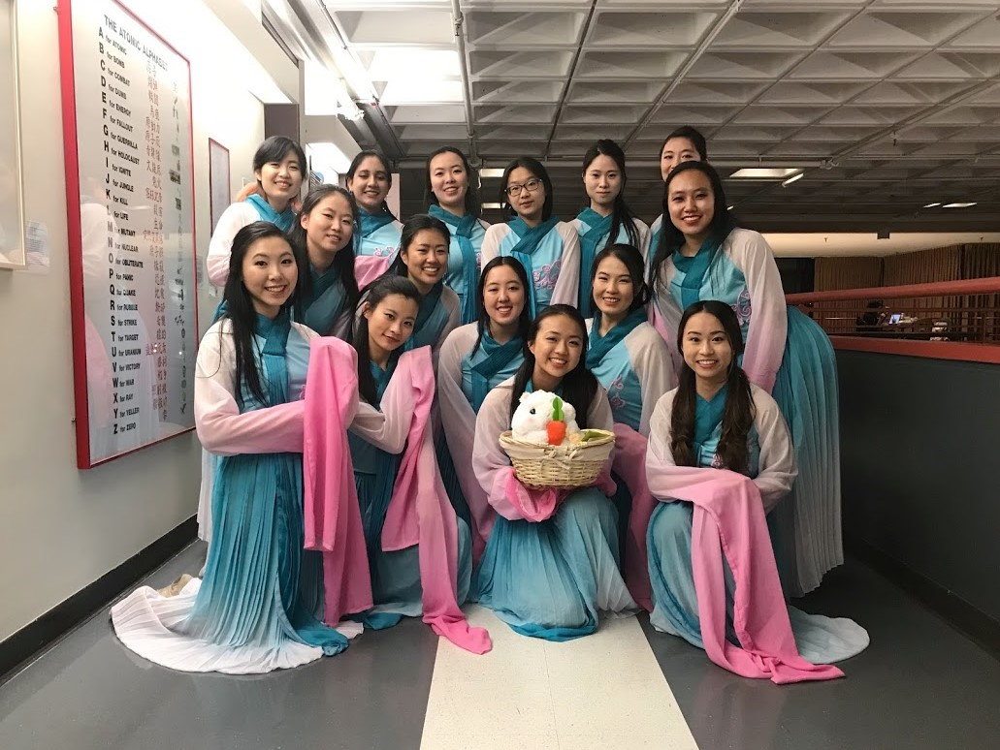
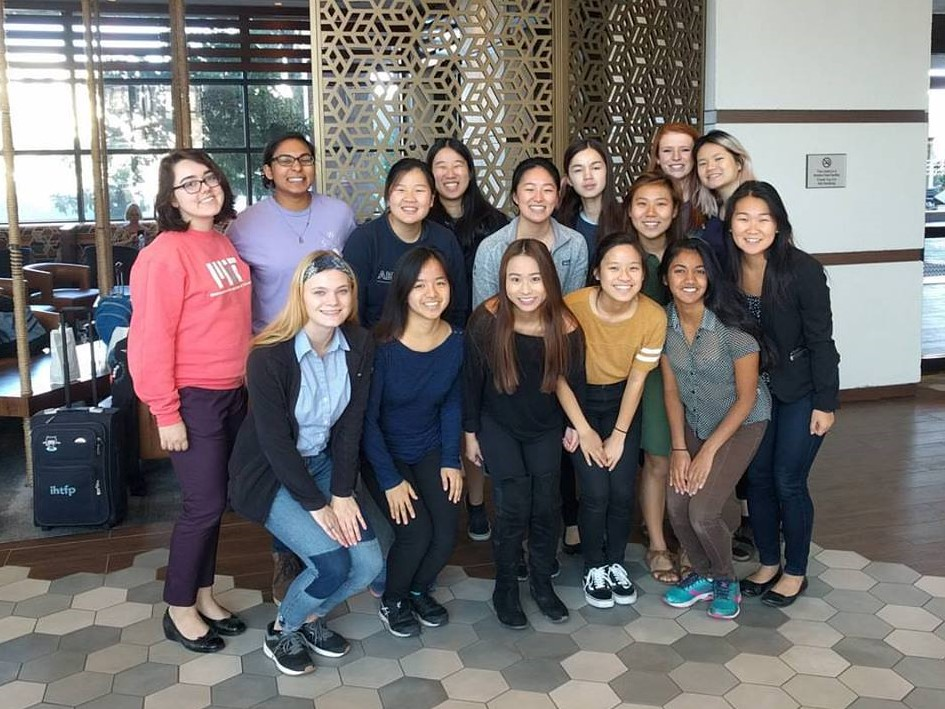
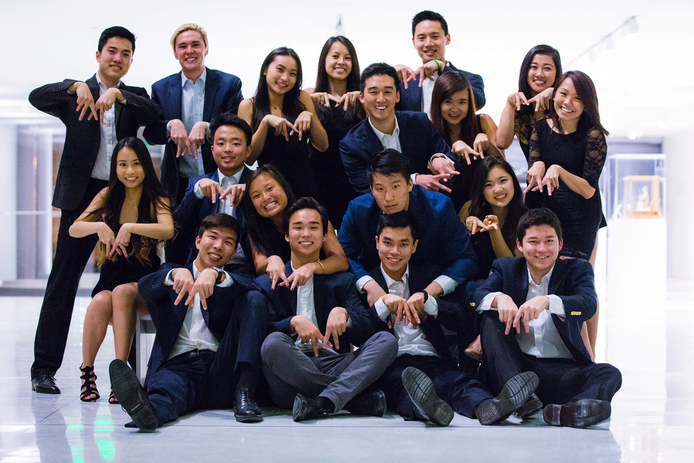
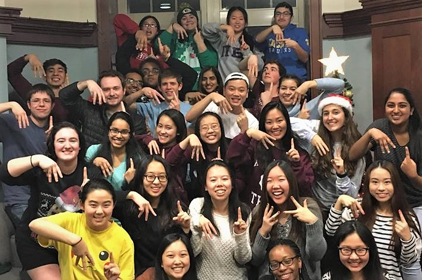

The HackMIT team organizes MIT's largest annual undergraduate hackathon, HackMIT, and
a high school hackathon, Blueprint. I love working with other amazing, passionate MIT students and seeing
how happy hackers, sponsors, and mentors are during the events. I feel like these events are
crucial to foster creativity, get students more into computer science, and promote project
creation!

I've been in AXO since freshman year and love the sisterhood, my family line, and all the
amazing females. Beyond helping me with UROP, job, and class recommendations and
encouraging me to join clubs, I think my sisters are just great friends and people. I can
always go to my big, little, or many other sisters if I want to grab food, talk about
life, or have fun.

Before coming to MIT, I had never danced before, but it was something that I had always wanted
to try. Even though I struggle a lot, I love that ADT accepts dancers of all skill levels,
including beginners. Now, I really like dancing and I've had so much fun dancing to kpop and
traditional Asian songs. Going to practice is a nice break from the grind of MIT and it's so
cool to perform at the end of every semester.

Growing up, engineering seemed intimidating to me as a female because my high school
lacked STEM opportunities. Even now, I am the first person from my high school to
attend MIT. However, SWE has blessed me with an amazing community of strong, confident
women who love STEM. I also love planning coding, STEM, and professional development
workshops for high and middle schoolers as a SWE Innovation Chair.

AAA is a great community of people who support Asians. We are working to
open up more forums to talk about diversity, race, and Asian representation, planning
cultural events and study breaks, and telling students about career opportunities in Asia.

Maseeh 1
I've lived on Maseeh 1 since freshman year, and I love my roommate, the people, and our GRTs.
I love how supportive everyone on my floor is and how often people hang out in the lounge,
eat dinner together, and have late-night talks.